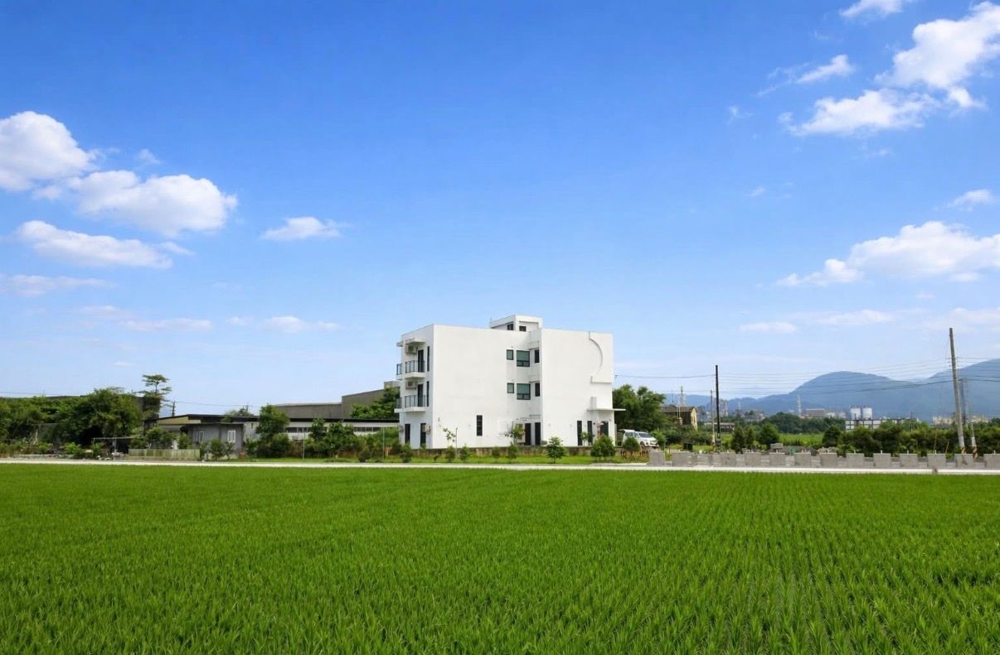

入住與退房
入住時間：15:00 後
退房時間：11:00 前
連續入住多日可洽詢住宿優惠，期間不進房打掃及更換備品。

在田野與微風之間，留一段時間給自己。
住進宜蘭的慢生活，享受自在相聚的每一刻。
兩棟不同的空間，同樣自在的旅程。
查看合作廠商的菜單照片，選擇喜歡的方案。
請提前 3～7 天預訂。
廠商會在預定日期配送至田邊走走 A 館或 B 館，由管家協助代收。
客人可以自行向廠商訂購，成功後將訂購資訊回傳官方 LINE；也可以請民宿協助代訂。
套餐內容與附贈用品，請以各合作廠商的菜單及最新公告為準。
實際菜單與方案以合作廠商最新資訊為準。
透過插畫式地圖，探索田邊走走周邊的食、玩、樂。
地圖為插畫式相對位置示意，非精確比例地圖。 景點實際位置、距離與行車路線請以 Google Maps 為準。
點擊地圖標記，可以查看景點介紹。
為旅客準備更多便利的在地合作服務。
我們正在準備專屬於田邊走走的特色選物與伴手禮。
希望把旅途中的美好，延續到日常生活。
A、B 館共用入住規定，請於入住前詳閱。
入住時間：15:00 後
退房時間：11:00 前
連續入住多日可洽詢住宿優惠，期間不進房打掃及更換備品。
浴巾、洗髮精、沐浴乳、吹風機。
不提供牙刷、牙膏，請自行攜帶。
民宿提供烤肉爐，可自行準備食材使用。
提供基本鍋具、餐具及廚具。
不提供調味料及食用油。
民宿使用電熱水器，加熱速度約每 3 分鐘提升 1°C。
請將垃圾拿至戶外垃圾桶，依照分類投入。
一般垃圾、鐵鋁罐、寶特瓶、玻璃。
戶外備有約 100 坪免費停車場。
全館禁菸。
請勿拆卸或移動電子設備，損壞或遺失需依規定賠償。
監視器設於客廳、廚房、娛樂室及一樓走道。
入住當天可使用現金或轉帳支付尾款。
暫不提供信用卡付款。
銀行匯款資訊請向官方 LINE 洽詢。
匯款後請來訊提供帳號末五碼；訂金請於約定期限內完成。
田邊走走 A、B 館地址不同，導航前請確認入住館別。